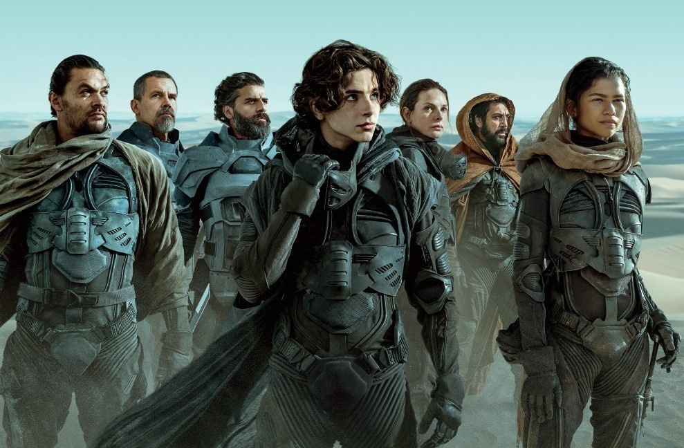

Tkaczyk News
SERWIS INFORMACYJNY
Recenzja filmu "Diuna"
Mając odpowiednią dźwignię, można podnieść planetę - przekonuje w literackim pierwowzorze "Diuny" diaboliczny baron Harkonnen. Powyższa kwestia to niezła metafora wyzwania, jakim jest ekranizacja kultowej powieści Franka Herberta. Biorąc pod uwagę rozmach, ambicje oraz wpływ, który wywarła ona na kolejne pokolenia twórców, "Diuna" jawi się jako osobne i wyjątkowo potężne ciało niebieskie na firmamencie popkultury. Jego ciężaru nie zdołali jednak udźwignąć nawet tak utalentowani reżyserzy jak Alejandro Jodorowsky i David Lynch. Pierwszy poległ jeszcze na etapie preprodukcji, ponieważ sponsorzy odmówili sfinansowania absurdalnie kosztownego 14-godzinnego kolosa. Drugi zaliczył spektakularną box-office'ową klapę, o której Roger Ebert napisał, że to film z jednym z bardziej niezrozumiałych scenariuszy w historii kina. Porażki wybitnych kolegów po fachu nie odstraszyły Denisa Villeneuve'a. Kanadyjczyk już raz dokonał cudu, kręcąc po latach sequel "Łowcy androidów", który wytrzymał porównania z klasycznym oryginałem. Autor "Pogorzeliska" wydawał się więc idealnym kandydatem do skolonizowania dla Hollywood świata "Diuny". Śpieszę donieść, że podbój zakończył się powodzeniem, ale nie obyło się bez ofiar. Villeneuve poszedł za radą jednego z bohaterów książki, który przekonywał, że pierwszy krok do ominięcia pułapki to uświadomienie sobie, gdzie ona jest. Reżyser wyciągnął naukę z niepowodzeń swoich poprzedników i namówił wytwórnię Warner Bros., aby sfilmować opus magnum Herberta w dwóch częściach. W ten sposób twórca "Sicario" zyskał pewność, że epicka historia arystokratycznego rodu Atrydów, którzy przejmują kontrolę nad skrywającą złoża drogocennej Przyprawy pustynną planetą Arrakis, po przeniesieniu na ekran nie zamieni się w chaotyczny ciąg ładnych obrazków. W przeciwieństwie do Lyncha Villeneuve nie musi np. posiłkować się nieustanną narracją z offu, która tłumaczy motywacje bohaterów i dopowiada, co wydarzyło się między scenami. Ma wystarczająco dużo czasu, żeby rozstawić na fabularnej szachownicy wszystkie pionki i przygotować widzów na nadciągającą nawałnicę przemocy. Jeśli więc oczekujecie po "Diunie" mrocznego widowiska science-fiction na skalę "Gwiezdnych wojen", po seansie najpewniej nie będziecie zgłaszać zastrzeżeń. Sęk w tym, że powieściowy oryginał oferuje znacznie, znacznie więcej. U Herberta anegdota o walce dobra ze złem jest zaledwie atrakcyjną fasadą, za którą kryją się zagadnienia wykraczające daleko poza formułę kosmicznej opery. "Diuna" traktuje m.in. o brutalnych polityczno-biznesowych machinacjach, religijnym fanatyzmie oraz wyzysku środowiska naturalnego. Znajdziecie w niej filozoficzne rozważania nad determinizmem, ludzką naturą, a także wiecznie żywym mitem mesjanizmu. Wreszcie jest to opowieść, w której nawet pozytywne postaci na czele z głównym bohaterem (Timothée Chalamet) noszą w sobie sporo mroku. Niestety, w filmie nie zostało z tego za wiele. Mając do wyboru, co ocalić - głębię czy klarownie opowiedzianą historię - twórcy wybrali tę drugą. W efekcie większość członków rozgwieżdżonej obsady nie ma tu za wiele do roboty i wszystkie scenariuszowe braki musi nadrabiać charyzmą. Na pocieszenie pozostał ładnie poprowadzony wątek mierzenia się z dziedzictwem przodków - niechcianym bagażem, którego brzemię przeznaczenie każe wziąć bohaterom na barki. Tam, gdzie scenarzyści nie mogą, na pomoc rusza reżyser. Villeneuve - być może najwspanialszy stylista współczesnego kina - do spółki z operatorem Greigem Fraserem ("Łotr 1") oraz scenografem Patrice'em Vermette'em ("Nowy początek") raz jeszcze tworzy porywającą, niezwykle plastyczną wizję świata przyszłości. Sam nie wiem, co podobało mi się bardziej: wizyta na rodzinnym cmentarzu Atrydów wyjętym żywcem z obrazów malarzy romantycznych, pierwsze spotkanie z zamieszkującym pustynię monstrualnym czerwiem czy raczej majestatyczna panorama spalonej słońcem stolicy Arrakis. Villeneuve'owi nie wystarczy świadomość, że publika przygląda się efektom jego pracy z rozdziawioną buzią. Goszcząc z wizytą na "Diunie", widz ma czuć, że między zębami chrzęści piasek, skórę pali słońce, uszy rozrywa ryk ornitopterów, a nozdrza wypełnia słodka woń Przyprawy. Immersja na całego. W finale otrzymujemy zapewnienie, że wszystko, co do tej pory zobaczyliśmy, to zaledwie preludium do właściwej historii. Pozostaje więc mieć nadzieję, że "Diuna" zarobi w kinach wystarczająco dużo, aby wytwórnia dała zielone światło na realizację sequela. Jest szansa, że drugi film zacznie wreszcie eksplorować bogactwo świata Herberta. Kolejna okazja szybko się nie powtórzy.
Nasza ocena: 7/10